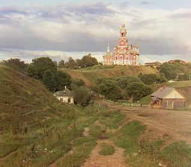

Project 1 (Colorization)
Kelly Yeh (SID: 3037233460)
Introduction
This project aims to color an image from digitized Prokudin-Gorskii glass plate images.
This is done through extracting, preprocessing, stacking, and properly aligning the three
provided BGR images atop each other such that its pixels line up perfectly. To extract the
BGR channels individually, evenly split up the image into thirds, vertically, and then crop
all sides of each image to remove any unnecessary borders. After extraction, there are
different approaches to laying and aligning these channels on top of each other.
Exhaustive Search
One way is through exhaustive search. This method naively searches over a window of
possible displacements, in my case I used [-15, 15], and chooses the best (x, y)
displacement. Evaluating the accuracy of the image matching can be done by either
minimizing Euclidean distance (L2 norm) or maximizing normalized cross-correlation
(NCC) between pixels. Both methods performed decently well so I just used the L2 norm.
This allowed me to decently align BGR channels for smaller, jpg images.
Cathedral

Image Pyramid
Exhaustive search, however, is too slow on larger, higher resolution tif images. Hence,
I had to implement an image pyramid. To build my image pyramid, I started with a
high resolution image and recursively downscaled it (by a factor of 2) until the image
was smaller than 256 pixels either in height or width; this is the coarsest, blurriest
layer. Here, I compute the ideal displacement using L2 norm similarly to exhaustive search,
again using a displacement window of [-15, 15] pixels.
A minor difference though, is that I will take this displacement value and multiply its x
and y values by 2^scale, in which scale is the number of times we have downscaled. This
essentially scales my displacement value back up such that it is relative to the dimensions
of the original image, where the displacement in then applied. This will occur on every level
up. Moreover, as I work my way back up the the pyramid, each layer will be realigned by the
computed displacement value from the previous layer multipled by 2 to account for upscaling.
Essentially, I iteratively update the alignment of my BGR channels with every displacement
value I discover until I finally reached and aligned the original image.